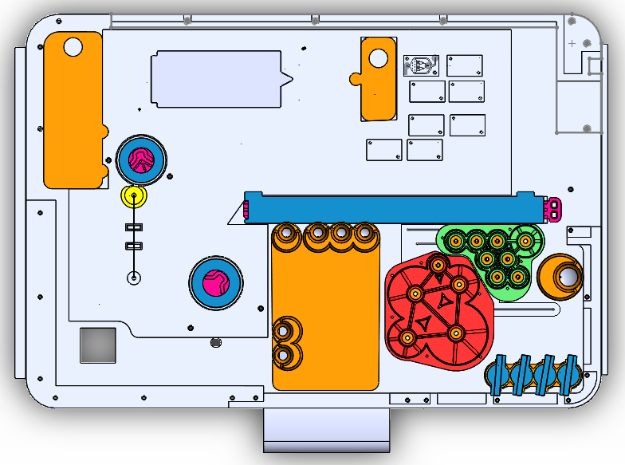
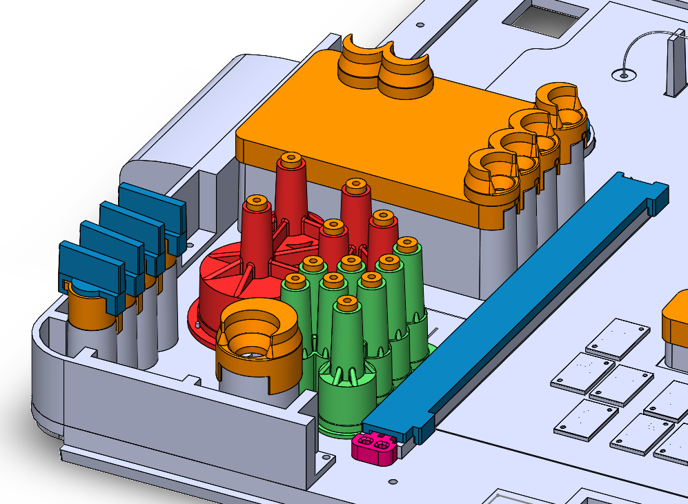
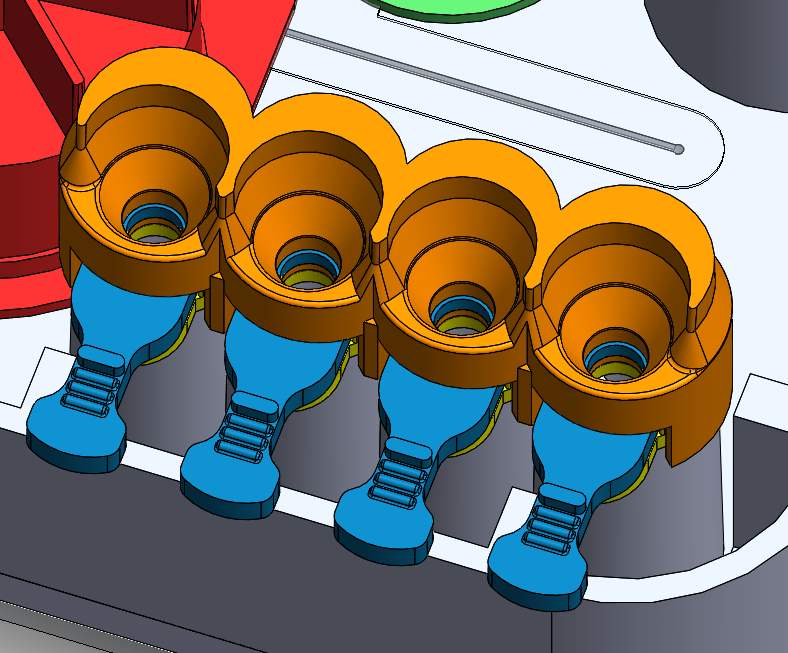
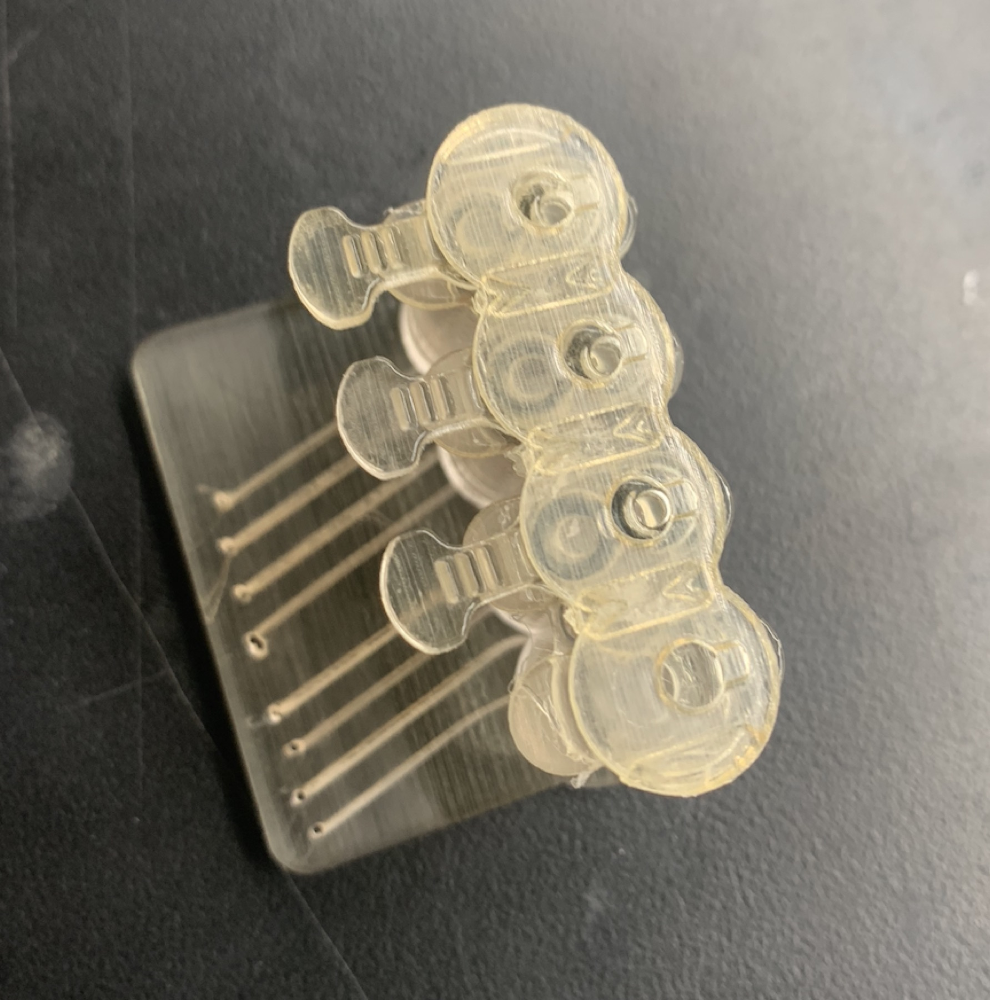
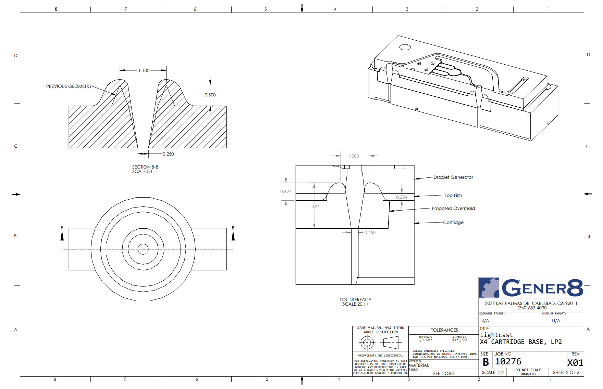
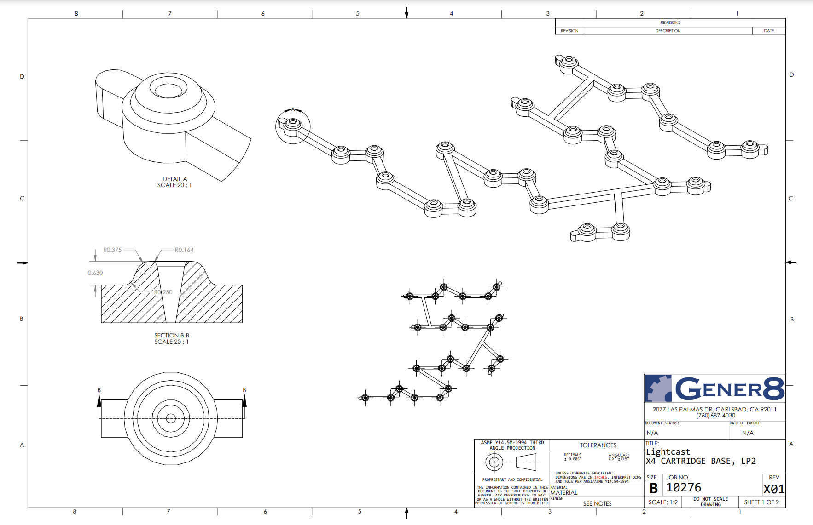
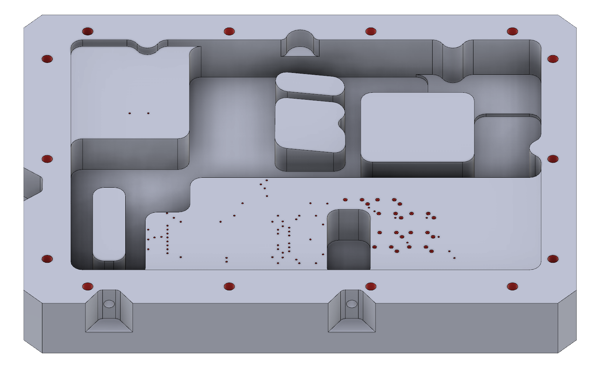
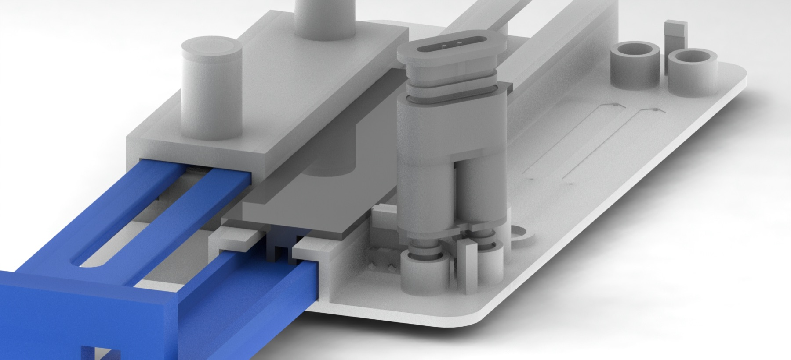

Cartridge Design as a Gener8 Intern
During my summer as a product development intern at Gener8, I had the incredible opportunity to design disposable cartridges for biotechnology companies eager to launch their medical devices. The focus of my work was a substantial cartridge—measuring an impressive 9″x5″—which marked the largest design Gener8 had undertaken to date.
On my very first day, I participated in a design for manufacturability (DFM) meeting, where I quickly learned that our in-house injection molding machine couldn’t accommodate such a large cartridge. This experience immersed me in the dynamic world of engineering problem-solving right from the start.

Over the course of the summer, I developed skills in designing for manufacturability, managing CAD version control, and creating testing fixtures. I also took charge of the bill of materials (BOM) and learned to present professional drawings to our clients.

One of my key projects involved designing a user interface for scientists to pipette biological samples into four wells. I created a conical well cap that guided pipette tips into the wells and designed four sliding valves, each capable of forming a watertight seal. This project deepened my understanding of injection molding best practices, such as optimal draft angles and rib widths, as well as how to design effective energy directors.

I made good use of our rapid prototyping capabilities by 3D printing models of the wells. This allowed me to assess the user interface and conduct leak tests to evaluate the design’s viability.

After the first batch of cartridges was manufactured, I performed comprehensive leak tests and discovered that one elastomer interface wasn’t watertight. To enhance the seal, I designed a new overmold shape with a larger surface area that performed well in finite element analysis (FEA). Fortunately, the injection mold was designed to be metal-safe, allowing us to machine it for the new overmold. I presented my proposed revisions, complete with detailed engineering drawings, to our customer, who approved the changes. I communicated these updates to our outsourced manufacturer, effectively resolving the leak issue.


I also designed various fixtures to streamline the assembly process by ensuring proper alignment during ultrasonic welding, laser welding, and hole drilling. This experience marked my introduction to subtractive manufacturing, complementing my prior work in additive manufacturing. I learned to visualize tool paths and incorporate fillets and chamfers into my fixture designs.

Overall, my internship was an incredibly rewarding experience that equipped me with practical engineering skills and enhanced my ability to create professional drawings and renderings for client communication. My proficiency in SolidWorks rendering has also improved significantly, allowing me to utilize advanced features for more impactful presentations.

This experience not only enriched my technical abilities, but also deepened my appreciation for the complexities of product development in biotech. I look forward to applying these skills to my future endeavors!